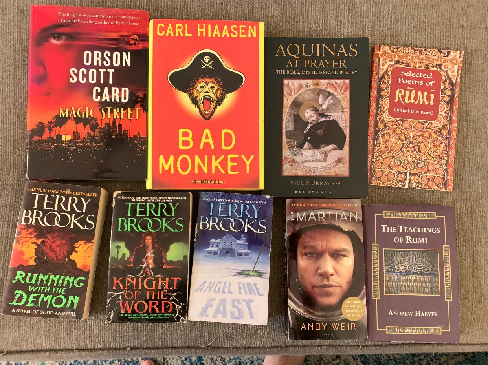

Games
This is my number one hobby right now. I love table-top games of all varieties! If you'd like to see my collection, check out my Board Game Geek profile by clicking the link below. It's borderline embarassing!
I think my favorite part of this hobby is opening up people's eyes to new types of games! I love to get to know what someone likes and curate a table-top experience just for them. So many people's scope of table-top games is limited to what you find at the local big box store like Monopoly, Checkers, and Uno, but that is the tip, of the TIP, of the iceberg!
My Games →
Music
Music has taken a back seat as of late but is by far the richest, most fullfilling, long-standing hobby I have. I have been a singer/songwriter for as long as I can remember and accompanying myself on acoustic guitar and keyboard. I used to play small coffeeshop gigs and lead worship in my local church and I loved the process of conveying a particular thought or emotion through music and lyrics. You can hear some originals, covers, and worship sets by checking out my Youtube Channel below.
I've never really tried to make a job of my music for fear that it would negatively effect my passion for it but I like to share it with others because I want to inspire them and, let's face it, because I like the attention! But still, my favorite way to enjoy music is to sit at my keyboard and just sing, no notes, no lyrics, no plan. Just let whatever is going on inside of me come out and fill the room I am in. This type of freeform inproptu playing and singing has become my confession booth, my therapist, my priest, and closest confidant.
My Music →
Reading
Reading hasn't always been something I have enjoyed, but a few years ago on a New Year's self improvement quest, I decided to try and read 52 books in one year (along with about 10 other goals) and believe it or not, I DID IT! I've been reading ever since, setting different goals each year and learning to be ok with not finishing a book I am not enjoying!

In many ways reading and games provide the same opportunity for me; a momentary escape from my world which allows me to engage in the adventures of another world! Also, I like inviting other people to become readers and helping them find content they will be passionate about and get lost in.
My Books →